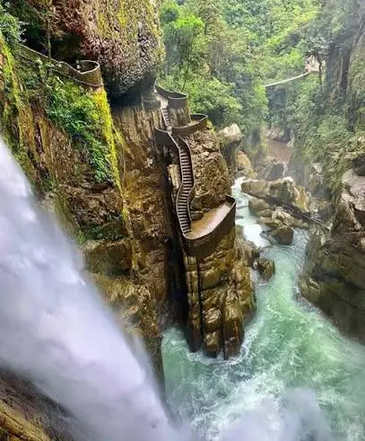

Pailón del Diablo
La cascada más célebre del Ecuador: el río Verde cae cerca de 80 metros sobre una garganta rocosa antes de unirse al río Pastaza. Escaleras talladas en la roca y dos puentes colgantes permiten acercarse hasta sentir la neblina de la caída.